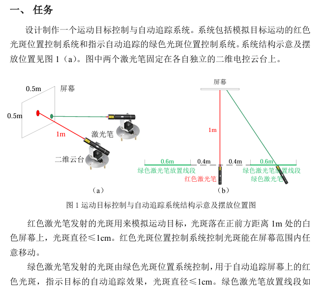

记录|一些使用过的图形处理
opencv
OpenCV（Open Source Computer Vision Library）是一个开源的计算机视觉和机器学习软件库，具有多平台、多语言的特点。
C++
通过C++使用opencv时，由于需要配置依赖项与工具目录，笔者使用Visual Studio来构建工程，具体配置教程请参考：opencv安装教程
测试例程如下：1
2
3
4
5
6
7
8
9
10
11
12
13
14
15
16
17
18
19
20
21
22
23
24
25
26
27
28
29
30
31
32
33
34
35
36
37
38
39
40
41
int main() {
// 打开默认摄像头（通常是摄像头0）
cv::VideoCapture cap(0);
// 检查摄像头是否成功打开
if (!cap.isOpened()) {
std::cerr << "Error: Could not open camera." << std::endl;
return -1;
}
cv::Mat frame;
while (true) {
// 从摄像头读取一帧
cap >> frame;
// 检查是否成功读取
if (frame.empty()) {
std::cerr << "Error: Could not grab a frame." << std::endl;
break;
}
// 显示帧
cv::imshow("Camera Feed", frame);
// 如果按下 'q' 键，退出循环
if (cv::waitKey(30) == 'q') {
break;
}
}
// 释放摄像头
cap.release();
// 销毁所有窗口
cv::destroyAllWindows();
return 0;
}
python
Python使用opencv相对C++就简单很多：1
pip install opencv-python
颜色追踪
1 | import cv2 |
霍夫圆检测
1 | import cv2 |
2021电赛
本队使用openmv识别并输出矩形的四个顶点与红色激光的位置，使用V831检测红点与绿点的位置，并输出其差值。

openmv
具体的函数可在openmv官方手册中查看。1
2
3
4
5
6
7
8
9
10
11
12
13
14
15
16
17
18
19
20
21
22
23
24
25
26
27
28
29
30
31
32
33
34
35
36
37
38
39
40
41
42
43
44
45
46
47
48
49
50
51
52
53
54
55
56
57
58
59
60
61
62
63
64
65
66
67
68
69
70
71
72
73
74
75
76
77
78
79
80
81
82
83
84
85
86
87
88
89
90
91
92
93
94
95
96
97
98
99
100
101
102
103
104
105
106
107
108
109
110
111
112
113
114
115# 使用april标签代码中的四元检测代码在图像中找到矩形。
# 四元检测算法以非常稳健的方式检测矩形，并且比基于Hough变换的方法好得多。 例如，即使镜头失真导致这些矩形看起来弯曲，它仍然可以检测到矩形。 圆角矩形是没有问题的
# 但这个代码也会检测小半径的圆...
import sensor, image, time
from pyb import UART
import lcd
sensor.reset()
sensor.set_pixformat(sensor.RGB565) # 灰度更快(160x120 max on OpenMV-M7)
sensor.set_framesize(sensor.QVGA)
sensor.set_windowing((50,40,200,160))
sensor.skip_frames(time = 2000)
sensor.set_auto_gain(False,20) # 禁止自动增益
sensor.set_auto_whitebal(False) # 禁止自动白平衡
sensor.set_brightness(-3)
sensor.set_contrast(2) # 对比度
clock = time.clock()
lcd.init()
uart3 = UART(3, 19200)
target = [(64, 100, 8, 25, 0, 36),(64, 100, 8, 40, 0, 36),(0, 100, 8, 119, -6, 53)]
##############
def find_max(blobs):
max_size=0
for blob in blobs:
if blob[2]*blob[3] > max_size:
max_blob=blob
max_size = blob[2]*blob[3]
return max_blob
target_ready, rect_ready = False,False
##############
def rect_convert(img,corners):
# 已知矩形的四个顶点坐标，坐标原点不在顶点上
point1 = (corners[0][0], corners[0][1])
point2 = (corners[1][0], corners[1][1])
point3 = (corners[2][0], corners[2][1])
point4 = (corners[3][0], corners[3][1])
# 缩小比例
scale = 0.94
# 计算矩形的中心点坐标
center = ((point1[0] + point2[0] + point3[0] + point4[0]) / 4, (point1[1] + point2[1] + point3[1] + point4[1]) / 4)
# 将顶点坐标转换为相对中心点的坐标
new_point1 = (point1[0] - center[0], point1[1] - center[1])
new_point2 = (point2[0] - center[0], point2[1] - center[1])
new_point3 = (point3[0] - center[0], point3[1] - center[1])
new_point4 = (point4[0] - center[0], point4[1] - center[1])
# 缩小矩形
new_point1 = (new_point1[0] * scale, new_point1[1] * scale)
new_point2 = (new_point2[0] * scale, new_point2[1] * scale)
new_point3 = (new_point3[0] * scale, new_point3[1] * scale)
new_point4 = (new_point4[0] * scale, new_point4[1] * scale)
# 将顶点坐标转换为相对原坐标系的坐标
new_point1 = (int(new_point1[0] + center[0]), int(new_point1[1] + center[1]))
new_point2 = (int(new_point2[0] + center[0]), int(new_point2[1] + center[1]))
new_point3 = (int(new_point3[0] + center[0]), int(new_point3[1] + center[1]))
new_point4 = (int(new_point4[0] + center[0]), int(new_point4[1] + center[1]))
#img.draw_circle(new_point1[0], new_point1[1], 5, color = (0, 255, 0))
#img.draw_circle(new_point2[0], new_point2[1], 5, color = (0, 255, 0))
#img.draw_circle(new_point3[0], new_point3[1], 5, color = (0, 255, 0))
#img.draw_circle(new_point4[0], new_point4[1], 5, color = (0, 255, 0))
img.draw_cross(new_point1[0], new_point1[1]) # cx, cy
img.draw_cross(new_point2[0], new_point2[1]) # cx, cy
img.draw_cross(new_point3[0], new_point3[1]) # cx, cy
img.draw_cross(new_point4[0], new_point4[1]) # cx, cy
after_convert = [new_point1, new_point2, new_point3, new_point4]
return after_convert
##############
while(True):
clock.tick()
img = sensor.snapshot().lens_corr(strength = 1.8, zoom = 1.0) # 拍摄一张图片，并进行形变矫正
# 下面的`threshold`应设置为足够高的值，以滤除在图像中检测到的具有
# 低边缘幅度的噪声矩形。最适用与背景形成鲜明对比的矩形。
for r in img.find_rects(threshold = 25000):
#for p in r.corners():
#img.draw_circle(p[0], p[1], 5, color = (0, 255, 0))
corners = rect_convert(img,r.corners()) # 得到转换后的矩形顶点
rect_ready = True
blobs = img.find_blobs(target,merge = 1,x_stride=2,y_stride=2,area_threshold=1,pixels_threshold=1 )
if blobs:
max_blob = find_max(blobs)
img.draw_rectangle(max_blob.rect()) # rect
img.draw_cross(max_blob.cx(), max_blob.cy()) # cx, cy
target_ready =True
if (target_ready == True) and (rect_ready == True):
tep = "@{}, {}, {}, {}, {}, {}, {}, {}, {}, {}\r\n".format(corners[0][0], corners[0][1], corners[1][0], corners[1][1], corners[2][0], corners[2][1], corners[3][0], corners[3][1], max_blob.cx(), max_blob.cy())
uart3.write(tep.encode("utf-8"))
print(tep)
target_ready, rect_ready = False,False
img.draw_string(1, 1, "%.1f" % clock.fps(), color = (255, 0, 0), scale = 1.5, mono_space = False,
char_rotation = 0, char_hmirror = False, char_vflip = False,
string_rotation = 0, string_hmirror = False, string_vflip = False)
lcd.display(img)
#print("FPS %f" % clock.fps())
V831(M2Dock)
资料链接：V831官方手册
注：对于M2Dock，开机启动代码顺序是 /root/app/main.py > /root/main.py1
2
3
4
5
6
7
8
9
10
11
12
13
14
15
16
17
18
19
20
21
22
23
24
25
26
27
28
29
30
31
32
33
34
35
36
37
38
39
40
41
42
43
44
45
46
47
48
49
50
51
52
53
54
55
56
57
58
59
60
61
62
63
64
65
66
67
68
69
70
71
72
73
74
75
76
77
78
79
80#!/usr/bin/python3
from maix import image, display, camera, gpio
import serial, time
camera.config(size=(240, 240))
ser = serial.Serial("/dev/ttyS1", 115200, timeout=0.2) # 连接串口
ser.write(b" \r\n")
time.sleep(1)
ser.write(b"{V831:Ready!}\n")
# LAB阈值的初始化格式:[L_MIN,A_MIN,B_MIN,L_MAX,A_MAX,B_MAX]
set_LAB = [[(0, 97, 20, 81, 6, 68),(0, 100, 19, 97, -78, 125)],[(0, 100, -63, -21, -46, 127),(0, 100, -63, -21, -46, 127),(0, 100, -63, -21, -46, 127)]] # 设定阈值，为了识别的稳定，每个颜色设定了多个阈值
flag = '1'
Red_ready,Green_ready=False,False
now_time = time.time()
ser.write(b"ok\n")
exp, gain = 96, 96 # 初值，exp 曝光[0, 65536]，gain 增益[16 - 1024]，随意设置得值会受到驱动限制。（80，60）（128，124）
camera.config(size=(240, 240), exp_gain=(exp, gain))
Color = [(255, 0, 0),(0, 255, 0)]
global x_center,y_center
while True:
img = camera.capture()
for j in range(2):
blobs = img.find_blobs(set_LAB[j], merge=True,pixels_threshold=1,area_threshold=1, margin=10) # 在图片中查找lab阈值内的颜色色块
if blobs:
for i in blobs:
size = i["w"] * i["h"] # 最大是240 *240也就是57600，这里用的是python中字典的键值对
if size > 3: # 这个设定了色块面积要大于多少才执行显示
x_start = i["x"]
x_end = i["x"] + i["w"]
x_center = int((x_start + x_end) / 2) # x中心坐标
y_start = i["y"]
y_end = i["y"] + i["h"]
y_center = int((y_start + y_end) / 2) # y中心坐标
m = max((x_center - i["w"] * 0.3), 0) # 往下四行都是为了确保x和y的数据在相机、屏幕显示范围内
n = max((y_center - i["h"] * 0.3), 0)
m = min((x_center - i["w"] * 0.3), 240)
n = min((y_center - i["h"] * 0.3), 240)
mk = [int(m), int(n), 20, 20]
if (mk[0] + mk[2]) < 260 and (mk[1] + mk[3]) < 260: # 原本的数值是220，这是为了确保下面的画框能完整显示，但当时比赛
img.draw_circle(x_center, y_center, int(i["h"] / 2 + 8), color = Color[j],
thickness=2) # 画一个中心点在色块中心，半径为20的空心圆
if (j == 0):
string = 'Red'
Red_center_x = x_center
Red_center_y = y_center
Red_ready = True
elif (j == 1):
string = 'Green'
Green_center_x = x_center
Green_center_y = y_center
Green_ready = True
str_size = image.get_string_size(string)
img.draw_string(x_center - int(str_size[0] / 2) - 5, y_start - 35, string, scale=1,
color=Color[j], thickness=2)
if flag == '1':
flag = '0'
now_time = time.time() # time.asctime()
if (Red_ready == True) and (Green_ready == True):
x_Err = Red_center_x - Green_center_x
y_Err = Red_center_y - Green_center_y
img.draw_string(0, 10,str(x_Err)+" "
+str(y_Err), scale = 2, color = (255, 0, 0), thickness = 2)
# tep = bytearray([44, 18, x_Err, y_Err, 0, 0, 91]) # 先获得数据
tep = "@"+str(x_Err)+","+str(y_Err)+"\r\n" # 构造所需的字符串，
ser.write(tep.encode("utf-8")) # 转换为utf-8发送
Red_ready,Green_ready=False,False
display.show(img)
time_t = time.time() - now_time
委托（K210）
接委托人需求，使用基于k210的CanMv，识别倒车入库的车库，方法上本质为识别矩形，CanMv官方文档。
记录代码如下：1
2
3
4
5
6
7
8
9
10
11
12
13
14
15
16
17
18
19
20
21
22
23
24
25
26
27
28
29
30
31
32
33
34
35
36
37
38
39
40
41
42
43
44
45
46
47
48
49
50
51
52
53
54
55
56
57
58
59
60
61
62
63
64
65
66
67
68
69
70
71
72
73
74
75
76
77
78
79
80
81
82
83
84
85
86
87
88
89
90
91
92
93
94
95
96
97
98
99
100
101
102
103
104
105
106
107
108
109
110
111#导入库
import sensor, image, time
import lcd
#对传感器进行配置、初始化
sensor.reset()
sensor.set_pixformat(sensor.RGB565)# 使用16bit全彩像素格式
sensor.set_framesize(sensor.QQVGA) # 为了保证处理速度，使用QQVGA即160*120分辨率
sensor.set_hmirror(True) # 为了在屏幕上正确显示图像，开启水平镜像
sensor.set_vflip(True) # 为了在屏幕上正确显示图像，开启垂直镜像
sensor.skip_frames(time = 2000) # 设置的生效需要时间，跳过一些帧
#初始化一些变量，包括用来计算帧率的时钟，lcd初始化，检测状态标志量
clock = time.clock()
lcd.init()
detect_status = False
#############################
"""
函数名：rect_convert
函数作用：由于通常识别的矩形为外框，对识别到的矩形进行一定的缩放，有助于正确标记顶点位置
入口参数：需要处理的图形img、原识别到的矩形顶点
返回：转换后的四个顶点坐标
"""
#############################
def rect_convert(img,corners):
# 已知矩形的四个顶点坐标，坐标原点不在顶点上
point1 = (corners[0][0], corners[0][1])
point2 = (corners[1][0], corners[1][1])
point3 = (corners[2][0], corners[2][1])
point4 = (corners[3][0], corners[3][1])
# 缩小比例
scale = 0.98
# 计算矩形的中心点坐标
center = ((point1[0] + point2[0] + point3[0] + point4[0]) / 4, (point1[1] + point2[1] + point3[1] + point4[1]) / 4)
# 将顶点坐标转换为相对中心点的坐标
new_point1 = (point1[0] - center[0], point1[1] - center[1])
new_point2 = (point2[0] - center[0], point2[1] - center[1])
new_point3 = (point3[0] - center[0], point3[1] - center[1])
new_point4 = (point4[0] - center[0], point4[1] - center[1])
# 缩小矩形
new_point1 = (new_point1[0] * scale, new_point1[1] * scale)
new_point2 = (new_point2[0] * scale, new_point2[1] * scale)
new_point3 = (new_point3[0] * scale, new_point3[1] * scale)
new_point4 = (new_point4[0] * scale, new_point4[1] * scale)
# 将顶点坐标转换为相对原坐标系的坐标
new_point1 = (int(new_point1[0] + center[0]), int(new_point1[1] + center[1]))
new_point2 = (int(new_point2[0] + center[0]), int(new_point2[1] + center[1]))
new_point3 = (int(new_point3[0] + center[0]), int(new_point3[1] + center[1]))
new_point4 = (int(new_point4[0] + center[0]), int(new_point4[1] + center[1]))
# 在识别到的矩形中间打上"Part"标签
img.draw_string(int(center[0])-20, int(center[1]), "Part", color = (255, 0, 0), scale = 2)
# 将识别到的矩形各个顶点用圆圈标记起来
img.draw_circle(new_point1[0], new_point1[1], 8, color = (0, 255, 255))
img.draw_circle(new_point2[0], new_point2[1], 8, color = (0, 255, 255))
img.draw_circle(new_point3[0], new_point3[1], 8, color = (0, 255, 255))
img.draw_circle(new_point4[0], new_point4[1], 8, color = (0, 255, 255))
#img.draw_cross(new_point1[0], new_point1[1]) # cx, cy
#img.draw_cross(new_point2[0], new_point2[1]) # cx, cy
#img.draw_cross(new_point3[0], new_point3[1]) # cx, cy
#img.draw_cross(new_point4[0], new_point4[1]) # cx, cy
# 将矩形各个顶点连线
img.draw_line(new_point1[0], new_point1[1], new_point2[0], new_point2[1], thickness = 2, color = (255, 0, 0))
img.draw_line(new_point2[0], new_point2[1], new_point3[0], new_point3[1], thickness = 2, color = (255, 0, 0))
img.draw_line(new_point3[0], new_point3[1], new_point4[0], new_point4[1], thickness = 2, color = (255, 0, 0))
img.draw_line(new_point4[0], new_point4[1], new_point1[0], new_point1[1], thickness = 2, color = (255, 0, 0))
after_convert = [new_point1, new_point2, new_point3, new_point4]
return after_convert
#############################
"""
主函数
"""
#############################
while(True):
clock.tick()
img = sensor.snapshot()
img = img.erode(2, threshold = 3)#图像滤波中的腐蚀算法，用于去除黑色矩形框身边的白色噪点
for r in img.find_rects(threshold = 25000,roi=(20,0,130,120)):
corners = rect_convert(img,r.corners())#新增的
detect_status = True #使能检测状态标志量
# 画框以标记ROI（Region of Interest，即感兴趣区域）
img.draw_rectangle(20,0,130,120, color = (255, 0, 0), thickness = 2, fill = False)
img.draw_string(40, 0, "%s" % "Detect Area", color = (255, 0, 0), scale = 1.5)
# 如果检测到矩形就在屏幕中显示检测成功
if (detect_status == True):
img.draw_string(10, 50, "%s" % "Detect successfully", color = (0, 255, 0), scale = 1.4)
# 在屏幕左上角显示帧率
img.draw_string(1, 1, "%.1f" % clock.fps(), color = (255, 0, 0), scale = 1.5)
# 在屏幕上显示图像
lcd.display(img)
测试
在开发测试中的一些小例子，留档以便不时之需
霍夫圆变换
1 | from maix import image, display, camera |
霍夫圆变换的基本原理如下：
边缘检测：首先，对图像进行边缘检测（通常使用 Canny 边缘检测算法），以得到图像中的边缘点。
参数空间：对于每个边缘点，假设它是一个圆的一部分。圆可以由三个参数确定：圆心的两个坐标$(a, b) $和半径 $r$。因此，霍夫圆变换会在一个三维参数空间（两维表示圆心位置，一维表示半径）中进行投票。
投票机制：对于每个边缘点 $(x, y)$，假设它属于一个半径为 $r$ 的圆，那么圆心 $(a, b)$ 可以通过以下公式计算：
其中，$\theta$ 为角度，范围从 $0$ 到 $360$ 度变化。对于每个可能的 $\theta$ 值，计算对应的 $a$ 和 $b$，并在参数空间中对这些 $(a, b, r)$ 进行投票。
- 峰值检测：在参数空间中，投票数最多的点对应于检测到的圆。
矩形查找
1 | from maix import image, display, camera |